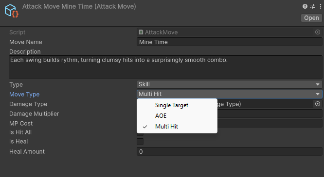
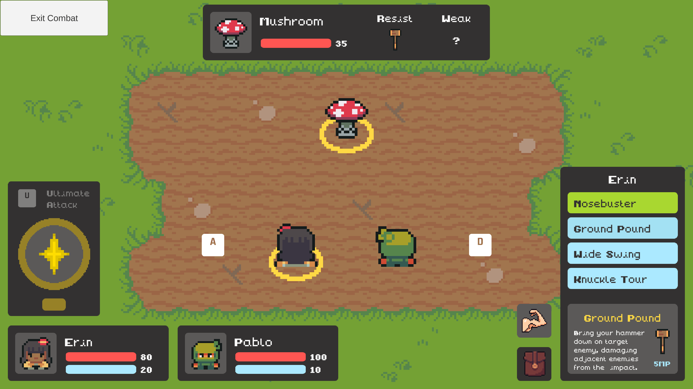
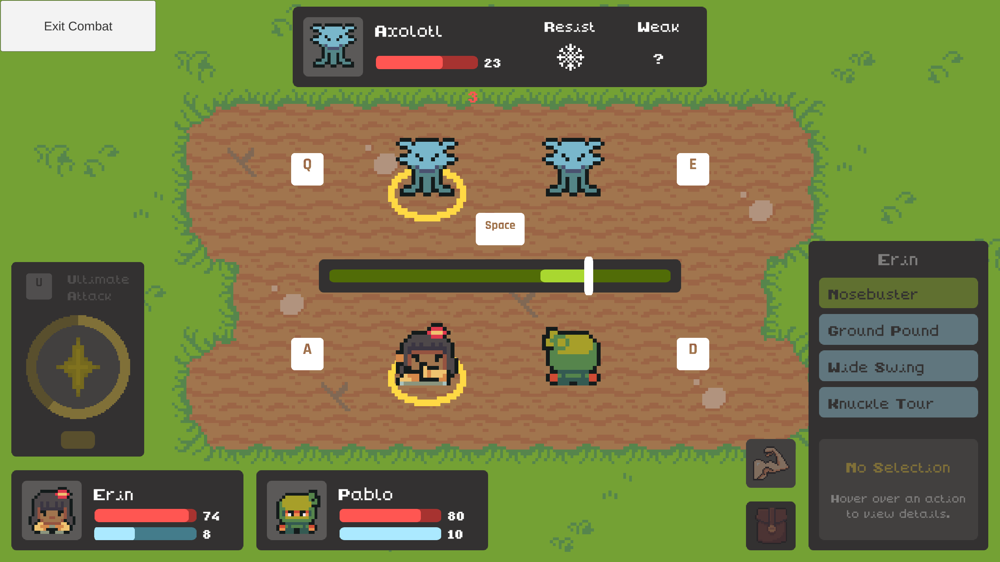
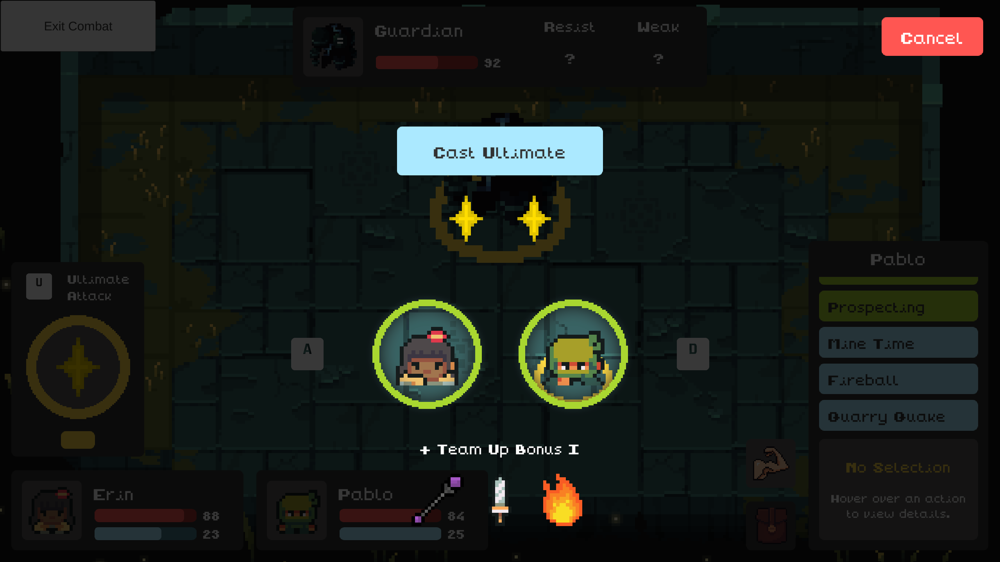
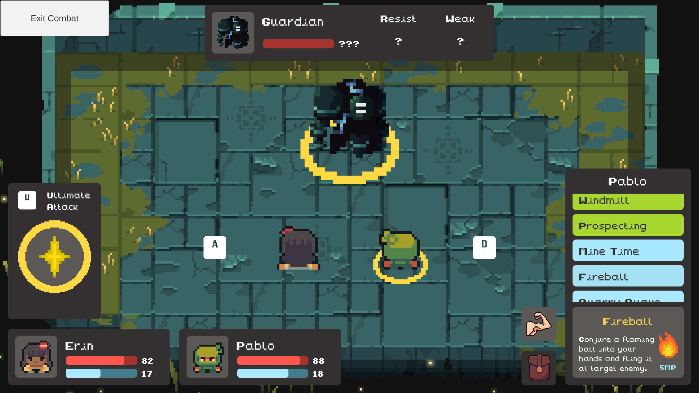

Mechanics

Turn-Based Combat
Take turns selecting actions against AI-controlled enemies in turn-based combat. Choose a party member and target enemies using the on-screen indicators.

Consumable Items
Items restore health or mana, revive allies, and provide single-target or party-wide effects depending on item type.

Attack Types
Party members have access to attacks based on their equipment. Skill attacks consume mana to use, while basic attacks deal lower damage but restore mana. Attacks are classified as single-target, multi-hit, or area-of-effect abilities.

Damage Types & Weaknesses
Enemies have specific weaknesses and resistances tied to different damage types, encouraging strategic ability selection. Equipment determines the damage type of attacks, such as sharp damage from swords or magic damage from wands.

Timed Attacks
Time attacks perfectly to increase damage dealt or keep the attack combo going for multi-hit attacks. Time blocks perfectly to reduce incoming damage from enemies.

Ultimate Attack
Ultimate charge builds through perfectly timed attacks and blocks. Players can unleash powerful ultimate attacks, with damage scaling based on party participation.

Boss Fights
Powerful bosses act as major progression challenges, requiring players to master combat mechanics and exploit enemy weaknesses. Defeating temple bosses rewards players with new elemental abilities.